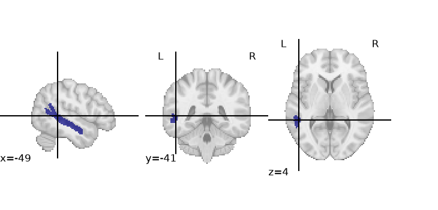
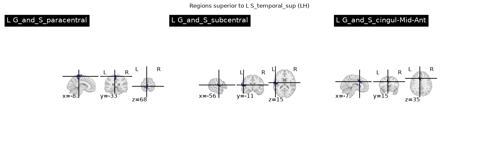

Note
Go to the end to download the full example code.
Datalog Intermediate Representation Example based on the Destrieux Atlas#
Uploading the Destrieux left sulci into NeuroLang and executing some simple queries.
import warnings
warnings.filterwarnings("ignore")
import nilearn
import numpy as np
from matplotlib import pyplot as plt
from nilearn import plotting
import nibabel as nib
from neurolang.datalog.chase import Chase
from neurolang import expression_walker as ew
from neurolang import expressions, region_solver, regions
from neurolang.datalog import DatalogProgram
from neurolang.datalog.expressions import Fact, Implication, TranslateToLogic
Set up IR shortcuts
C_ = expressions.Constant
S_ = expressions.Symbol
Imp_ = Implication
Fact_ = Fact
Eb_ = expressions.ExpressionBlock
Load the Destrieux example from nilearn as a fact list#
atlas_destrieux = nilearn.datasets.fetch_atlas_destrieux_2009()
image = nib.load(atlas_destrieux['maps'])
image_data = image.get_fdata().astype(int)
[fetch_atlas_destrieux_2009] Dataset directory found: /home/runner/nilearn_data/destrieux_2009
Load the regions into Voxel-style regions
if 'lut' in atlas_destrieux:
# nilearn >= 0.11 provides a look-up table with label indices and names
lut = atlas_destrieux['lut']
atlas_labels = zip(lut['index'], lut['name'].astype(str))
else:
atlas_labels = atlas_destrieux['labels']
region_dict = {}
for label, name in atlas_labels:
if label == 0:
continue
voxels = np.transpose((image_data == label).nonzero())
if voxels.shape[0] == 0:
continue
r = regions.ExplicitVBR(
voxels,
image.affine, image_dim=image.shape
)
region_dict[name] = r
plotting.plot_roi(region_dict['L S_temporal_sup'].spatial_image())

<nilearn.plotting.displays._slicers.OrthoSlicer object at 0x7fa1f424fda0>
Make the fact list
destrieux = S_('Destrieux')
destrieux_facts = [
Fact_(destrieux(
C_(name),
C_(region)
))
for name, region in region_dict.items()
]
Set the datalog interpreter with Region-managing builtins and adding lh, lr#
class Datalog(
region_solver.RegionSolver,
TranslateToLogic,
DatalogProgram,
ew.ExpressionBasicEvaluator
):
def function_lh(self, x: str) -> bool:
return x.startswith('L ')
def function_rh(self, x: str) -> bool:
return x.startswith('R ')
Construct a query#
- superior_sts_l(name, r) :- destrieux(‘L S_temporal_sup’, superior_sts_l),
anatomical_superior_of(r, superior_sts_l), lh(name), destrieux(name, r)
superior_sts_l = S_('region_l_sts')
r = S_('r')
name = S_('name_')
r1 = Imp_(
S_('superior_sts_l')(name, r),
destrieux(C_('L S_temporal_sup'), superior_sts_l) &
S_('anatomical_superior_of')(r, superior_sts_l) &
S_('lh')(name) &
destrieux(name, r)
)
print(r1)
datalog_program = Eb_(
destrieux_facts + [
r1,
]
)
Implication{λ{S{superior_sts_l: Unknown}}(S{name_: Unknown}, S{r: Unknown}) ← λ{C{and_: typing.Callable[[nl_expr.type_system.Unknown, nl_expr.type_system.Unknown], nl_expr.type_system.Unknown]}}(λ{C{and_: typing.Callable[[nl_expr.type_system.Unknown, nl_expr.type_system.Unknown], nl_expr.type_system.Unknown]}}(λ{C{and_: typing.Callable[[nl_expr.type_system.Unknown, nl_expr.type_system.Unknown], nl_expr.type_system.Unknown]}}(λ{S{Destrieux: Unknown}}(C{'L S_temporal_sup': str}, S{region_l_sts: Unknown}), λ{S{anatomical_superior_of: Unknown}}(S{r: Unknown}, S{region_l_sts: Unknown})), λ{S{lh: Unknown}}(S{name_: Unknown})), λ{S{Destrieux: Unknown}}(S{name_: Unknown}, S{r: Unknown}))}
Interpreting and running the query#
dl = Datalog()
dl.walk(datalog_program)
solution = Chase(dl).build_chase_solution()
Extracting the results from the intermediate representation to a python set Plot a few results in one multi-panel figure for a clean gallery thumbnail.
rsbv = ew.ReplaceExpressionsByValues({})
result = rsbv.walk(solution['superior_sts_l'])
print(f"{len(result)} regions found")
fig, axes = plt.subplots(1, 3, figsize=(15, 5))
for ax in axes:
ax.set_axis_off()
for ax, (name, region) in zip(axes, list(result.unwrapped_iter())[:3]):
plotting.plot_roi(region.spatial_image(), title=name, axes=ax)
plt.suptitle("Regions superior to L S_temporal_sup (LH)")
plt.tight_layout()

30 regions found
Total running time of the script: (0 minutes 5.071 seconds)